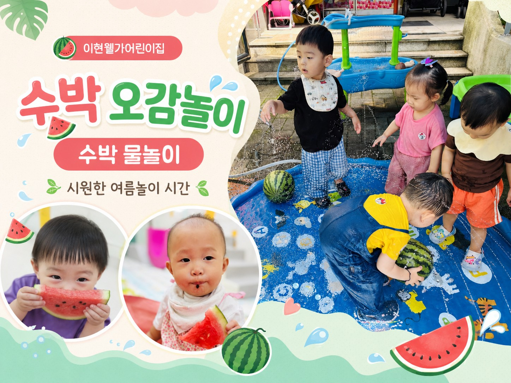

2026.07 · 여름 오감놀이
동그란 수박 하나로 시작된
웃음 가득한 탐색 시간
아이들은 초록 줄무늬 수박을 눈으로 살펴보고, 손으로 두드려보고, 시원한 수박 조각을 맛보며 여름 과일을 자연스럽게 경험했습니다.
이어진 물놀이 시간에는 물줄기를 손으로 잡아보고, 물 위에 뜬 수박을 함께 굴려보며 친구들과 안전하고 즐겁게 놀이했습니다.
- 탐색색, 모양, 무게를 살펴보는 감각 놀이
- 맛보기입으로 느껴보는 달콤한 여름 과일
- 물놀이시원한 물줄기와 함께하는 대근육 놀이
- 사회성친구와 차례를 기다리고 함께 웃는 시간